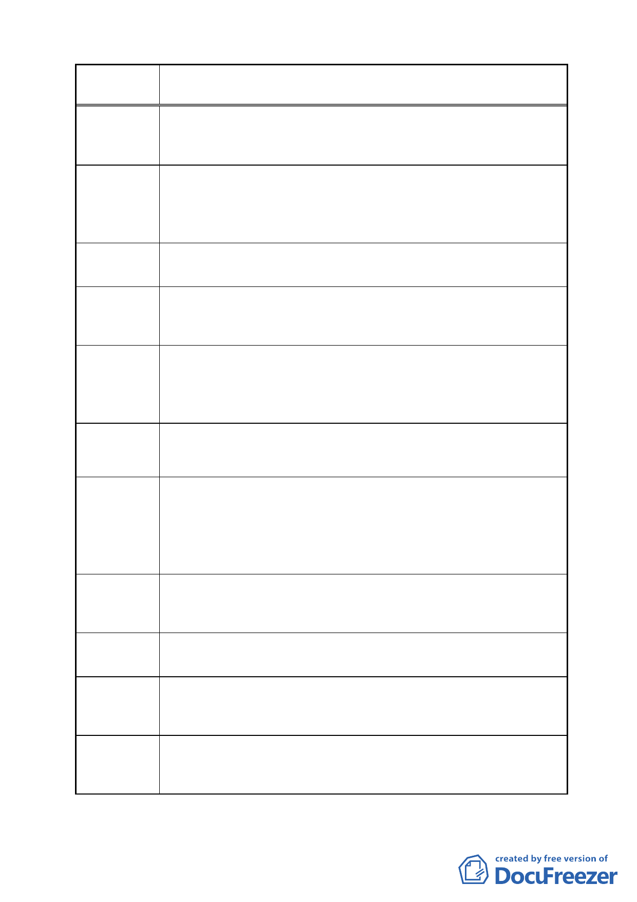

案 名 變更臺北市南港區鐵路地下化沿線土地主要計畫案
陳情理由
10
建議辦法
10
陳情理由
11
建議辦法
11
陳情理由
12
建議辦法
12
陳情理由
13
建議辦法
13
陳情理由
14
建議辦法
14
陳情理由
15
市府將鐵路局位於Ｂ區的土地排除在重劃範圍內，由於該區
的土地面積甚大，如果不參與重劃，會造成其他地主負擔大
幅度增加。
請市府考慮納入鐵路局所有土地進行跨區市地重劃，以分擔
費用。或是預定於Ｃ區所規劃的北部流行音樂文化中心的腹
地，由中央政府以擴大內需振興經濟的預算支付，降低各地
主的費用負擔。
由於Ｃ區的公園設施為全台北市市民所共有，並非原地主所
獨享，應此社會成本內部化的原則不適用跨區市地重劃。
Ｃ區土地上的所有設施建設費用應該由使用的公務單位、市
政府或中央政府以正式的公務預算支應，地主已提出土地，
所以不應該再計入這些費用而增加地主的負擔。
市府所提主計劃書中第 44 頁第捌項第 3 條中要求臨南港路的
土地須退縮 15 公尺，並計入法定空地一案。此項與市地重劃
以獲得公共設施用地的精神與目的不相符合且影響地主權益
甚大。
請市府應以市地重劃後取得的公設地規劃南港路拓寬與人行
道的建設，或是計入地下室開挖比例內，以減少地主的負擔。
本基地變更前工業區（工三）之基準法定容積為 26,799 ㎡
（8,933×300%），由於本案定位本區為住商混合區，因此回饋
比例應介於「工變住」與「工變商」之間，所以以 25%計算，
變 更 後 之 基 準 法 定 容 積 調 整 為 20,099 ㎡ 【 8,933 × 300% ×
（1-25%）】。
建議本案後續都市計畫變更為住商混合區基準法定容積維持
20,099 ㎡，另考量本基地為捷運昆陽站 400 公尺範圍內，具
大眾停車空間需求，建議本案可適用停車空間容積獎勵。
此案於土地發還時，本公司所擁有土地的位置是否仍在原位
置，其形狀是否經過調整，而依據的原則為何？
依市地重劃實施辦法第 31 條：「重劃後土地分配之位置，以
重劃前原有土地相關位次分配於原街廓之面臨原有路街線者
為準」，建請市府秉持上述原則進行配地作業。
其中開發方式中第 5 條「本計畫範圍內人口密集地區得經本
府同意後剔除納入重劃範圍內」，這條方式和市地重劃的精神
與規定不合。
- 44 -